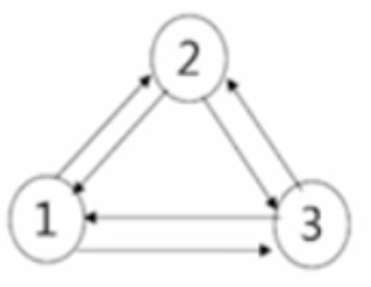

1.1图基本概念
图（graph）：图是由顶点的有穷非空集合和顶点之间边的集合组成，通常表示为：G(V,E)，其中，G表示一个图，V是图G中的顶点的集合，E是图G中边的集合。
顶点(Vertex)：图中的数据元素。线性表中我们把数据元素叫元素，树中将数据元素叫结点。
边：顶点之间的逻辑关系用边来表示，边集可以是空的。
无向边(Edge)：若顶点V1到V2之间的边没有方向，则称这条边为无向边。
无向图(Undirected graphs)：图中任意两个顶点之间的边都是无向边。（A,D）=（D,A）
有向边：若从顶点V1到V2的边有方向，则称这条边为有向边，也称弧(Arc)。用
有向图(Directed graphs)：图中任意两个顶点之间的边都是有向边。
（注意：无向边用“（）”，而有向边用“< >”表示。）
简单图：图中不存在顶点到其自身的边，且同一条边不重复出现。
有向完全图：有向图中，任意两个顶点之间都存在方向互为相反的两条弧，如图2.1所示。
无向完全图：无向图中，任意两个顶点之间都存在边，如图2.2所示。
稀疏图：有很少条边。
稠密图：有很多条边。
权（Weight）：与图的边或弧相关的数。
网（Network）：带权的图。
子图（Subgraph）：假设G=（V,{E}）和G‘=（V',{E'}），如果V'包含于V且E'包含于E，则称G'为G的子图。
度（Degree）：无向图中，与顶点V相关联的边的数目。有向图中，入度表示指向自己的边的数目，出度表示指向其他边的数目，该顶点的度等于入度与出度的和。
路径的长度：一条路径上边或弧的数量。
连通图：图中任意两个顶点都是连通的，如图2.3所示。
连通分量：无向图中的极大连通子图。（子图必须是连通的且含有极大顶点数）。
强连通分量：有向图中的极大强连通子图。
生成树：无向图中连通且n个顶点n-1条边叫生成树。
有向树：有向图中一顶点入度为0其余顶点入度为1。
森林：一个有向图由若干棵有向树构成生成森林。
1.2 图的表示方法
（1）邻接矩阵：用两个数组，一个数组保存顶点集，一个数组保存边集，表示顶点相邻关系的一个N*N的方阵。
①无向图如下图2.4所示
②有向图如下图2.5所示
③邻接矩阵的优缺点
优点：简单，直观，易于理解；方便检查任何一对顶点之间是否存在便；方便计算任一顶点的度；方便求取任一顶点的所有邻接点。
缺点：浪费空间，存稀疏图时有大量无效的0元素；浪费时间，统计稀疏图的总边数。
（2）邻接表：数组与链表相结合的存储方法，采用链式结构存储图结构，顶点的邻接表由顶点的所有邻接点构成，图的邻接表由所有顶点的邻接表构成。
①无向图如下图2.6所示
②有向图如下图2.7所示

③邻接表的存储空间
对于有n个顶点e条边的有向图，用邻接表或逆邻接表存储需（n+e）个单元；对于有n个顶点e条边的无向图，用邻接表存储需用（n+2e）个单元。
④结论
无向图的邻接表中，表结点个数为其边数的2倍，比为偶数。
若已知n个结点e条边的图，其邻接表中表结点的个数为奇数，则该图一定为有向图。
1.3 图的两种遍历方式
（1）深度优先遍历（DFS）：从图中某个顶点v出发，访问此顶点，然后从v的未被访问的邻接点出发深度优先遍历图，直至图中所有和v有路径相通的顶点都被访问到。
（2）广度优先遍历（BFS）：类似于树的层次遍历。
图的最短路径
2.1 图的最短路径基本概念
地图导航、城市交通图、站点之间最短路径等，这些问题都可以使用带权图描述如下：
（1）源点：第一个顶点；
（2）终点：最后一个顶点；
（3）权值：所花的费用或时间等；
（4）最短路径：源点与终点之间权值最小的路径。
2.2 图的最短路径分类
（1）单源最短路径问题：从某个固定源点出发，求这个源点到其他所有项点的最短距离。
（2）多源最短路径问题：求任意两个顶点之间的最短距离。
2.3 Dijkstra算法
按照路径长度递增（非递减）的顺序产生最短路径。迪杰斯特拉算法适用于有向图和无向图。
其具体过程为：
（1）dist[1] V0到此顶点的最小路径长度；
（2）dist[2] dist[3] dist[4] dist[5] dist[6]只能以S中的顶点作为中转而形成的路径中长度最短的路径长度。
注意：保持从V0 到集合S中各顶点的最短路径长度都不可大于从V0到集合V-S中的任何顶点的最短路径长度。
2.4 多源路径问题
方法1：把单元最短路径算法调用v次，但是对于稠密图来讲效率不高；
方法2：Floyd算法。
特点：每一条最短路径不是一次确定，而是逐步形成，适用于用邻接矩阵存储的稠密图的多源路径最短问题。
2.5 Floyd算法基本思想
通过Floyd计算图G=(V,E)中各个顶点的最短路径时，需要引入两个矩阵，矩阵S中的元素a[i][j]表示顶点i(第i个顶点)到顶点j(第j个顶点)的距离。矩阵P中的元素b[i][j]，表示顶点i到顶点j经过了b[i][j]记录的值所表示的顶点。
假设图G中顶点个数为N，则需要对矩阵D和矩阵P进行N次更新。初始时，矩阵D中顶点a[i][j]的距离为顶点i到顶点j的权值；如果i和j不相邻，则a[i][j]=∞，矩阵P的值为顶点b[i][j]的j的值。 接下来开始，对矩阵D进行N次更新。第1次更新时，如果”a[i][j]的距离” > “a[i][0]+a[0][j]”(a[i][0]+a[0][j]表示”i与j之间经过第1个顶点的距离”)，则更新a[i][j]为”a[i][0]+a[0][j]”,更新b[i][j]=b[i][0]。同理，第k次更新时，如果”a[i][j]的距离” > “a[i][k-1]+a[k-1][j]”，则更新a[i][j]为”a[i][k-1]+a[k-1][j]”,b[i][j]=b[i][k-1]。更新N次之后，操作完成。